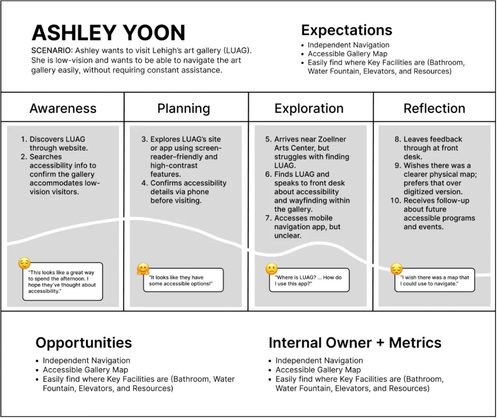

photography
photography | headshot, graduation pictures, event pictures
tools: adobe photoshop, canon

Tricoard Chair is a Scandinavian-inspired lounge chair designed for a broad range of users, from young adults to older generations. The design balances clean, minimal aesthetics with a high degree of personalization, allowing users to customize the chair to reflect their own style and space.
OVERVIEW

Many visitors to the Lehigh University Art Gallery struggled to navigate its interior, limiting access and engagement with the space. Our team designed a comprehensive wayfinding system to address this, delivering three components: bilingual directional signage in English and Spanish, a 2D print map with a separate Braille tactile overlay, and a 3D printed tactile floor model of the gallery. Tools used included Figma, Adobe Illustrator, and Blender.
The project reinforced that effective wayfinding shapes how people feel within a space and determines who feels welcome in it.
THE PROBLEM
We discovered early on that many visitors struggled to locate LUAG or navigate its interior spaces, which limited access and overall engagement with the galleries. The existing signage and maps were minimal and not designed with accessibility in mind.
The brief challenged us to address three key goals: clarity, accessibility, and aesthetics. We wanted to create a welcoming experience for all individuals from the moment they arrived.
USER RESEARCH
We designed with multiple user personas in mind. One was a visitor with low vision, which we simulated by having one group member navigate the gallery without her glasses. This revealed how vital contrast, font legibility, and consistent iconography are for orientation. Another persona represented visitors who rely on Braille. This pushed us to think carefully about placement, scale, and depth in tactile maps to ensure that important features like restrooms, elevators, and water fountains were easy to identify by touch.
While we weren’t able to conduct large-scale user testing, these exercises helped us empathize deeply with our target audiences and shape more inclusive design choices.

PROCESS

The process began with research into existing protein bar designs, pulling inspiration from packaging I found compelling. A mood board built around the keyword "biotech nutrition" shaped the visual direction early on. One image in particular stood out: a beige-toned composition featuring DNA iconography, which later became a key reference point and informed the decision to incorporate similar motifs into the final packaging design.


FINAL DELIVERABLE

KEY TAKEAWAYS
At its core, this project is defined by ethical complexity. The use of engineered human muscle cells as a food source challenges deeply ingrained cultural taboos and raises questions around consent, identity, and the boundaries of consumption. This makes the brand inherently controversial, forcing both designer and viewer to confront discomfort.
For me as a designer, this project required a deliberate separation between personal ethics and professional responsibility. While the premise may not align with one's own values, the role demands engaging critically and thoughtfully with the brief. Rather than avoiding the controversy, the design leans into it, using clarity, restraint, and credibility to present the product as plausible and real. This reflects a key challenge in design practice: the ability to navigate ethically ambiguous briefs while still producing rigorous, intentional work.
Ultimately, this project is not just about packaging a product, but about exploring how design can shape perception, normalize emerging technologies, and provoke dialogue around what we consider acceptable in the future of food.